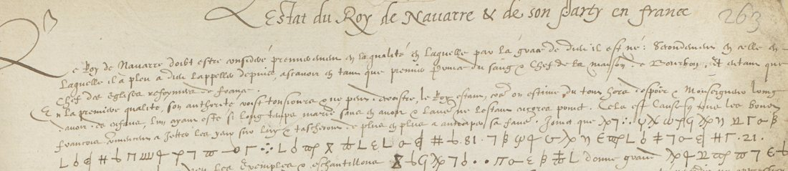
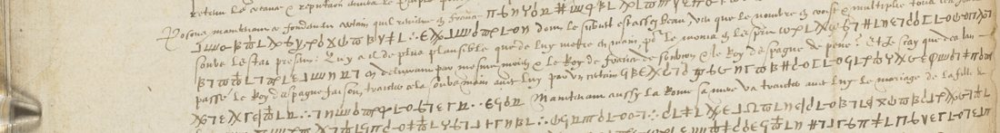

01 Two records, one deciphered at the time
The catalogue item covered DECODE R8501 and R8505, both in BL, Harley MS 1582, both “Non-decrypted” on DECODE (for R8501 this is wrong: a contemporary decipherment exists). Harley 1582 is a made-up volume of state papers, and the two records have nothing in common but the shelfmark.
R8501 (ff. 71–72) is cipher in a Stafford despatch of 1586 whose contemporary decipherment is written out in clear on f. 72r. That page was transcribed, and Stafford’s key rebuilt from it, for the neighbouring letter: see Stafford to Walsingham, 20 August 1586. Nothing there is open.
R8505 (ff. 263–264, four images) is the subject of this page.

02 What the memoir is
The clear French, which is most of the four sides, surveys Henri de Navarre as a political asset. It gives his two “qualitez”: first prince of the blood, so that his authority can only grow while the king has no children, and chief of the reformed churches of France. It then lists the places he holds and their garrisons in Guyenne, Languedoc, Dauphiné and Provence, the counts and viscounts of his following, the harquebusiers each region can raise, the Catholic party, the German and Swiss alliances, and the marriage question. Internal dates run to 1576, 1577 and 1580; La Rochelle, Brouage and Saint-Jean-d’Angély are current concerns. That places it among Navarre’s embassies to the Protestant powers in the early and middle 1580s (this repository holds the numerical cipher of one of them, in Ségur 1585–86), and explains how the paper came to rest in an English secretary’s file.
03 The cipher, and the letter written as dots
A homophonic alphabet of about fifty graphic shapes (Greek-looking and geometric forms, written spaced out symbol by symbol with no word division), plus ten nomenclator numbers written between dots (6, 21, 26, 36, 51, 57, 72, 81, 99, 721), which are names and are not decoded. The frequent letters have three to six homophones each and the rare ones one symbol each, an ordinary chancery design of the 1580s.
| letter | signs | letter | signs |
|---|---|---|---|
| a | lunate ε, ψ, ∂, ∅, ъ-with-cup | m | the dot groups (two, three, four dots) |
| b | φ (oval pierced by a long stem) | n | loop-foot stem, σ |
| c | ⌠, reversed L, crossbars, + | o | Π, three-legged Π, &Sha; |
| d | #, ⨺, ≢ (three bar-shapes) | p | hourglass |
| e | L, 7, Γ, I | q | c+y ligature, plain ω |
| f | stem with a dot cluster at its upper right | r | ω with a bar, the same crossed |
| g | square bracket, square U | s | two-bowled ε, η, R, Ƶ, II … |
| h | Ω | t | β, crossed ε, ωſ, F |
| i | ∂-loop, 9-shape, y, c, V | u | ъ, long-s, ϝ |
| l | χ, χ with a hanging o | y | v |
The dot groups are a letter. Every earlier transcription of these pages, the first pass here included, took the clusters of two, three and four dots for punctuation or word division and dropped them. They are the letter m, which is why the first recovered key had no m. The controls: 7 Eb :2 psi G o B Gm b Tu o wf = “et maintenant”, Xo psi :3 G B dd 7 = “l’amitié”, :4 PiG b n c Gm q wT ne L = “Monsieur de”. Two further pairs had also been merged: φ (b) with the tall long-s (u), as in “de beau|caire” and “d’une bonne armée”, and the two-bowled ε (s) with the lunate ε (a).

04 How the key was recovered
- The first attack failed. All four sides were transcribed (about 3,600 symbols) and run through a homophonic solver (simulated annealing) against the repository’s French language models. No French came out. Under English, Spanish and Italian models every language scored alike, the pattern of a solver that has found no key.
- A control located the fault. Real French was enciphered with a fifty-symbol homophonic key of the same shape and run through the same solver (
control.py). It failed in the same way, so the obstacle was the solver, not the manuscript. There were two faults: a Sukhotin vowel/consonant constraint that is wrong for a key of this shape, and a temperature scale far too small for log-probability differences of this size. With both corrected the control recovers 100% of its key, and still 95.5% of its characters when 15% of its symbols are randomly corrupted. Transcription noise at the level this manuscript produces is therefore tolerable. - The key of the manuscript. The corrected solver returned French at once (“et qu’ils attendent”, “à l’avenir”, “duquel”), and basin-hopping with a word-segmentation objective recovered the alphabet.
- The key corrected the transcription. A French key with no symbol for m and none for b is impossible. The images were checked again, and the dot groups, φ and the two epsilons accounted for the gap. ff. 263v and 264v were re-transcribed symbol by symbol against the key, changing 29% and 31% of their symbols.
05 The decipherment
The full text, run by run with its clear-text context, is in reading.txt. The cipher carries what the writer would not put in clear: a Spanish drift, a marriage, an army of reiters, and the people who might be bought.
- “… auec le prince de Parme pour lui rendre les places …”
- “… contre luy un party de malcontens …”
- “… ou instrument principal de la ruine de ceus de la religion, come ainsi soit qu’il ne peut desguiser ce faict …”
- “… italien qui sert d’ingenieur a Lisbone …”
- “… pour le rejoindre auec ceste maison ennemie de la chrestienté …”
- “… qu’il la charge d’une armee a sa deuotion …”; “… sortir de la une armee de reistres pour la jeter et espandre sur le pais de celuy qui …”
- “… tandis que le party de ceus de la religion demeurera ferme en [72] …”
- f. 264v, on Languedoc: “et maintenant jouissant de l’amitié estroite de Monsieur de Mont[morenci], auquel la leur est necessaire … places de toute la province de Languedoc … estant icelui asseuré de Beaucaire sur le Rosne et de la seneschaussée de Bésiers … Carcassonne … a la devotion du Roy de Navarre.”
- f. 263r names d’Épernon in cipher, and f. 264r argues about “quelque gentilhomme”, “les causes”, “la guerre”, “nos provinces”, “fortes et asseurées”, “pour la conservation”.
06 What stays open
95.1% of the 3,551 deciphered characters fall inside French words, measured by Viterbi segmentation against a 37,000-word vocabulary built from the repository’s French corpora. The measure is conservative: sixteenth-century spellings and proper names the vocabulary does not hold count as not deciphered.
Two things are left. The ten nomenclator numbers are names. Three have contexts that narrow them: 72 is a country and almost certainly France (“la guere contre ceus dela religion en 72”, “demeurera ferme en 72”); 81 is a person and probably the King (“le 81 son frere”); 21 is a feminine noun, the League or the army (“21 ch[ar]gee dela guere”). None is fixed by the text. About 5% of the characters do not resolve into French words: faint ink, and shapes ambiguous within one family.
A note on method, since it bears on the figure. ff. 263v and 264v were re-transcribed symbol by symbol from the images against the recovered key. On ff. 263r and 264r the first-pass transcription was corrected only by a constrained pass. A token could be swapped only between shapes that the second transcription proved confusable (the dot groups and the f symbol, a stem with a dot cluster at its upper right, so a faint stem looks like a bare cluster; φ and the long-s; the two epsilons; the two stem-loops; χ and the hourglass; the three bar-shapes; the bracket and Π), and only where the word model gained clearly. That is 77 tokens, 2% of the text, each listed in emendations_all.txt so it can be checked against the manuscript.
07 Sources
- British Library, Harley MS 1582 ff. 263–264 (images via DECODE record R8505, login required; not in the public domain, and reproduced here only as these crops).
- DECODE records R8498–R8506 for Harley MS 1582, checked for keys and siblings; R8501 deciphered in Stafford 1586.
- BnF, 500 de Colbert 401: Navarre’s numeric cipher with Ségur and its 1583 description: Ségur 1585–86.
- Calendar of State Papers Foreign, Elizabeth, vols. 18–20 (1583–86), searched for this memoir and for a decipherment of it: not there.
- Transcriptions, key, reading, the control experiment and the solvers:
harley1582r8505/in the repository.
Working files, both transcriptions, the key and the attack scripts: harley1582r8505/.